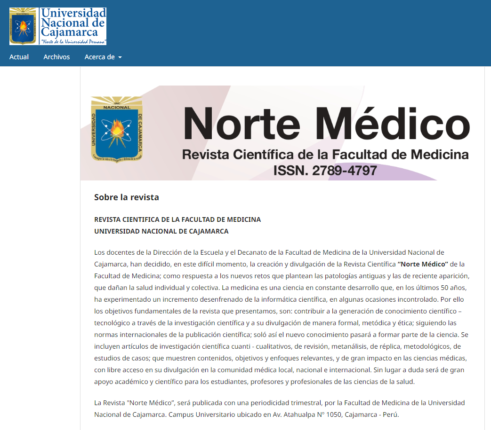
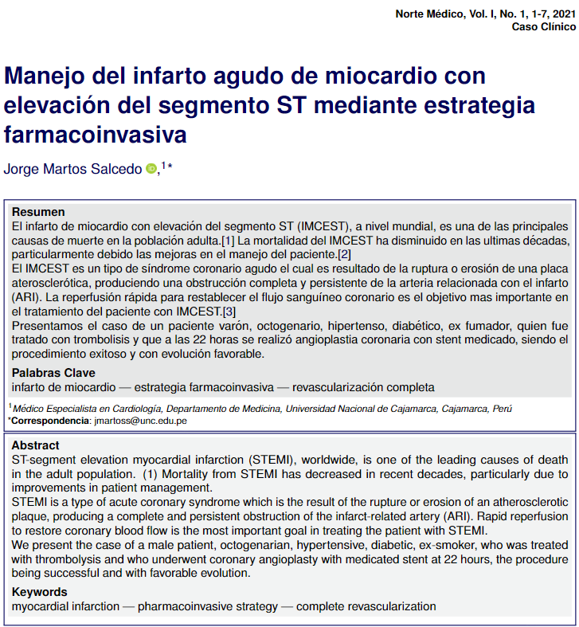
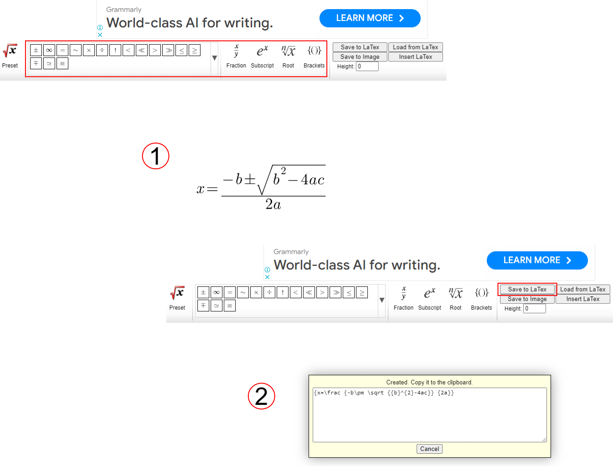
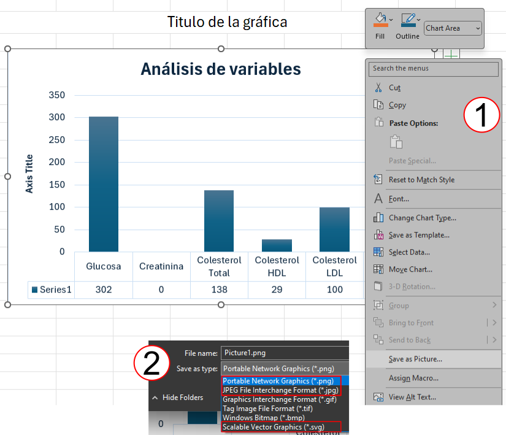

Guía didáctica de Latex para publicación en Revista Peruana

Propósito de la plantilla de la Revista
El propósito de la plantilla de la revista es facilitar y agilizar el proceso de edición de los artículos mediante el uso de un formato basado en código \(\LaTeX\). Aunque su correcto manejo requiere cierto conocimiento de instrucciones básicas, este artículo proporciona una guía didáctica destinada a usuarios no familiarizados con \(\LaTeX\). El objetivo es que estos usuarios puedan faciliar la edición de la plantilla por parte de la Revista utilizando herramientas ampliamente disponibles, lo que garantiza un envío exitoso de sus artículos para revisión y publicación.
Vista previa de la plantilla

Consideracions esenciales para envio del formato
Manejo de Ecuaciones
Para escribir ecuaciones matemáticas, se recomienda utilizar un editor de ecuaciones con el propósito de simplificar y acelerar el proceso.
Método 1: Utilizando el Editor de Ecuaciones de Microsoft Word
En este método, se emplea el editor de ecuaciones de Microsoft Word. Primero, se escriben las ecuaciones de forma manual, ingresando símbolo por símbolo (ver Figura 2). Luego, asegurándose de que esté activada la opción latex, se selecciona la ecuación deseada y se copia (control + C) para pegarla posteriormente en su destino (control + V).

Método 2: Utilizando un editior de ecuaciones en Línea
En este método, se utiliza el recurso web en línea Equation Editor. Después de ingresar la ecuación deseada (ver Figura 3), se presiona el botón Save to LaTeX, lo que abrirá una ventana con el código LaTeX debidamente formateado, listo para ser copiado y utilizado en el documento.

Manejo de Tablas
Las tablas se crean y modifican en formato Microsoft Excel para uniformizar el llenado de los datos, los estilos de tabla y facilitar la edición final. Cada tabla se organiza en una hoja distinta, y siempre se coloca un título o un comentario al pie de la tabla si es necesario. A continuación, se detallan las pautas a seguir:
Crear la Tabla con Espacios de Celdas Respetados: Es importante crear la tabla respetando los espacios de celdas. Se permite utilizar texto en cursiva y negrita según sea necesario (Ver Figura 4).
Utilizar Líneas Horizontales para Presentar la Información: Se recomienda utilizar líneas horizontales para separar encabezados y presentar la información de manera clara (Ver Figura 5).
Posibilidad de Combinar Celdas o Columnas: Es posible combinar celdas o columnas según la información a presentar. Esto puede ayudar a mejorar la claridad y la organización de la tabla (Ver Figura 5).
Preferencia por Tablas en Blanco y Negro: Se recomienda utilizar tablas en blanco y negro siempre que sea posible. Si es necesario resaltar información relevante, se puede hacer uso de algún color, pero se debe tener en cuenta que la legibilidad no se vea afectada.
A continuación, se incluyen ejemplos visuales que ilustran estas pautas:


Estas pautas garantizan que las tablas sean fáciles de entender y de interpretar para los lectores, lo que mejora la calidad y la presentación de los documentos.
Manejo de Figuras y Gráficas
El manejo de figuras y gráficas es fundamental para la presentación efectiva de información visual en tus documentos. A continuación, se detallan las pautas para el manejo de figuras y gráficas:
De Fuentes Externas
Todas las imágenes se deben enviar incrustadas en el documento, indicando siempre título o descripcion y su fuente bibliográfica. Además, se recomienda enviar el archivo original de las imágenes por separado (archivo original en .jpg o .png), indicando siempre el orden de las figuras.
Generadas Utilizando Microsoft Excel
- Cada gráfica se debe organizar en su propia hoja de Excel, indicando Indicando siempre el título de la misma (ver Figura 6).
- Si la gráfica se construyó a partir de una tabla Excel, se debe conservar solo la figura de interés o ambas (ver Figura 7).
- Para las gráficas creadas en Microsoft Excel (formato .xlsx), se deben seguir estos pasos para garantizar una calidad alta:
- Guardar la imagen seleccionando clic derecho y luego guardar imagen.
- Elegir el destino de almacenamiento y seleccionar entre los formatos .png o .svg (ver Figura 8).
- También se puede enviar el archivo original en formato .xlsx.
A continuación, se presentan ejemplos visuales que ilustran estos procesos:



Siguiendo estas pautas, aseguras que las figuras y gráficas en tus documentos mantengan la calidad visual necesaria y facilitan su comprensión por parte de los lectores.
Manejo de Bibliografía
Para la bibliografía se utiliza el programa administrador de citas conocido como Zotero.